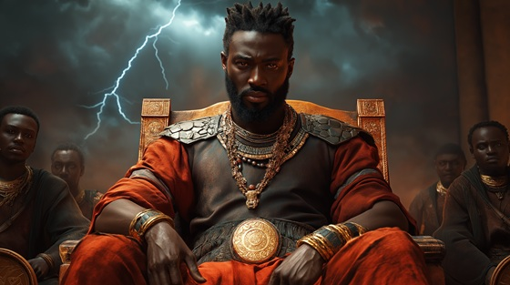

In the ancient kingdom of Oyo, the rise of Shango was no peaceful ascension. He was not chosen by tradition, but by raw force, fear, and a destiny that seemed written in lightning itself. As a mortal king, Shango ruled not with diplomacy, but with storm and spectacle. His presence was electrifying, his judgments swift.
The griots speak of his eyes like fire, his words like thunder rolling down the mountains, and his throne, not carved, but claimed by conquest. No ruler before him had such command of the sky. The people called him a man — but they whispered “god” before his crown ever gleamed.
This song captures the beginning of the myth, where Shango the king begins his journey toward Shango the orisha.
The Red Throne of Oyo
A blaze in his gaze, iron in his tone,
He carved his path through blood and stone.
The drums foretold a throne of fire,
A crown forged in a warlord’s ire.
Not born of peace, but lightning's will—
He took the seat that fate would fill.
Raise the banners red and bold,
Shango rules in flame and gold.
Strike the sky, shake the land,
The storm obeys the firebrand.
The priests stood still, the earth held breath,
When Shango claimed the oath of death.
Not with blessings, but with glare,
He silenced gods with just a stare.
No council swore, no treaty signed—
Just thunder screaming, unrefined.
Raise the banners red and bold,
Shango rules in flame and gold.
Strike the sky, shake the land,
The storm obeys the firebrand.
His enemies bowed or lost their heads,
He walked the halls the lightning fed.
No mortal man, not even then—
He ruled like storms command the wind.
The people feared, the people sang,
For Oyo danced to thunder’s clang.
Raise the banners red and bold,
Shango rules in flame and gold.
Strike the sky, shake the land,
The storm obeys the firebrand.
Kings may reign with sword and scepter,
But he commands the storm's own center.
When he speaks, the heavens fall—
He is the wrath beyond us all.
So raise your fists, and bow your head,
The Red Throne burns where Shango treads.
From crown to sky, his fire flows—
The thunder king, the storm he chose.